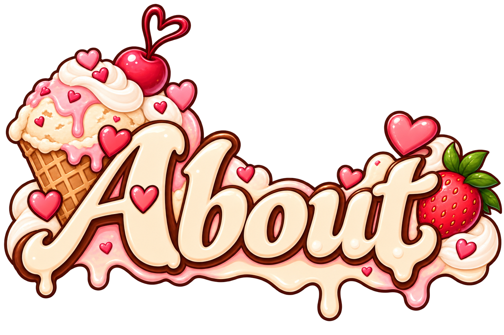

About Mid Vanilla
A little sweetness. A little curiosity. A lot more connection.
Mid Vanilla is a playful space for couples to connect, communicate, flirt and explore together.
We created it around a simple idea: intimacy isn’t just a physical thing and doesn’t have to feel awkward or overly serious.
Sometimes all you need is a little nudge; a question, a challenge, a date idea, or an excuse to focus on each other.
What is “Mid Vanilla”?
It’s the sweet spot between comfortable and curious.
Not completely vanilla. Not necessarily wild. Just a place where couples can explore at their own pace.
Choose the flavour that feels right for you both and see where it takes you.
Made for real couples
There’s no winning, scoring, or being “good” at Mid Vanilla.
The goal is simply to talk more openly, make time for each other, try something new, and hopefully leave feeling a little closer than when you started.
Meet the Founders
Mid Vanilla was created by a real couple who wanted a more playful way to stay curious about each other.

🍓 Strawberry Delight
The heart behind the adventure.
Strawberry Delight is the dreamer, romantic and curious mind behind Mid Vanilla.
She loves the little moments that make relationships feel special, the conversations that go deeper than expected, the dates you keep talking about afterwards and those moments when you learn something about your partner you somehow never knew.
She brings the sweetness, imagination and a little bit of mischief to the Mid Vanilla world, always looking for new ways to help couples feel closer, more playful and more understood.
🏹 The Hunter
The adventure behind the heart.
The Hunter is the explorer, problem-solver and steady half of the duo.
He believes connection grows when couples keep choosing each other, whether that means trying something new, laughing when things don’t quite go to plan, heading off on an adventure, or simply making time for one another.
He brings the curiosity, adventure and grounded side of Mid Vanilla, helping turn big ideas into experiences couples can actually share together.
Better Together
Strawberry Delight and The Hunter might be our alter egos, but the idea behind them is very real.
Relationships aren’t about two people becoming the same.
They’re about two different people continuing to discover each other.
That’s what we want Mid Vanilla to encourage.
More curiosity.
More play.
More communication.
More little adventures.
Because sometimes the best part isn’t where you end up.
It’s discovering it together.